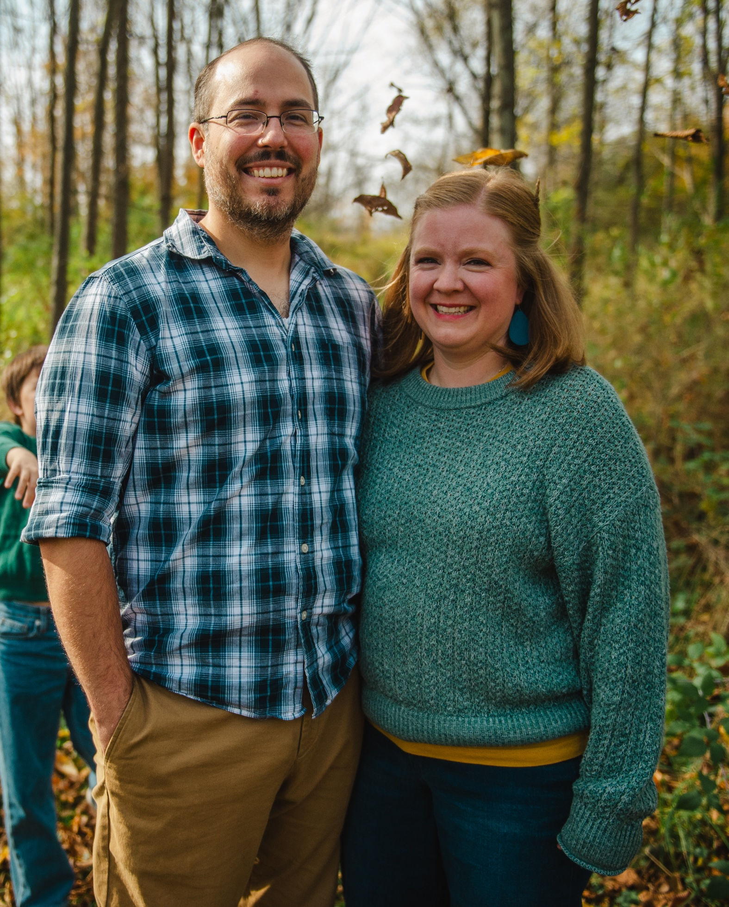

I am an Associate Teaching Professor in Information Science at Cornell University and Director of the Online Master’s Program in Artificial Intelligence (launching fall 2027). I teach learners data science, data communication, machine learning, and artificial intelligence.
I enjoy working with individuals from all backgrounds interested in applying computational methods to extract knowledge and inferences from a wide-range of domains. I have training and experience in data science and policy evaluation. In addition to my academic work, I offer consulting services for organizations interested in data science, including research and analysis as well as tailored workshops teaching programming skills to your employees.
More about me
I am originally from Northern Virginia. After graduating from James Madison University, I pursued my PhD in political science from The Pennsylvania State University. I am now on faculty at Cornell University where I also direct the Online Master’s Program in Artificial Intelligence (launching fall 2027). Previously I was an Assistant Senior Instructional Professor at the University of Chicago.
My research focused on state judicial politics and utilized machine learning and text analysis to analyze agenda-setting behavior on state courts of last resort, including judicial selection/retention, institutional structure, and case selection under discretionary jurisdiction.
Since transitioning to the interdisciplinary field of computational social science, my focus has shifted to developing courses and curricular materials to integrate programming and computational methods in training in the social sciences. I teach undergraduate and graduate courses in research design, programming in R, data visualization, core mathematics, and statistical learning/computational modeling.
I also offer custom training and research services for companies interested in learning and implementing data science techniques using R and programmatic workflows. I am an RStudio certified trainer, and have experience teaching learners of all different backgrounds how to apply programmatic techniques to extract knowledge from data. For more information on the types of services I can offer you, contact me directly.
Personal
My amazing wife Amanda
